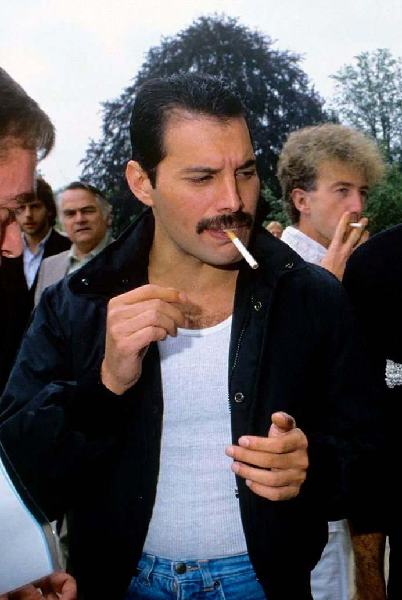
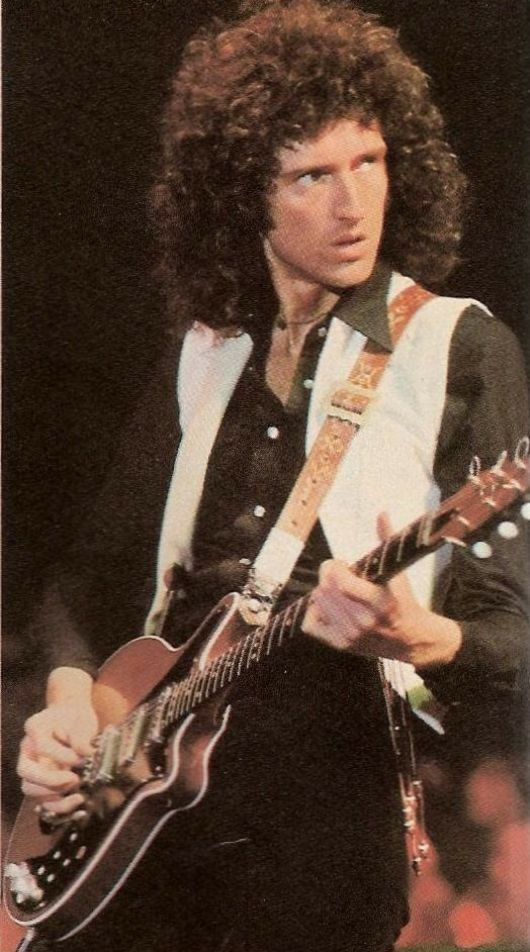
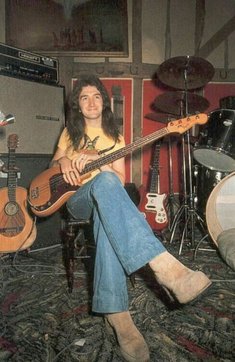
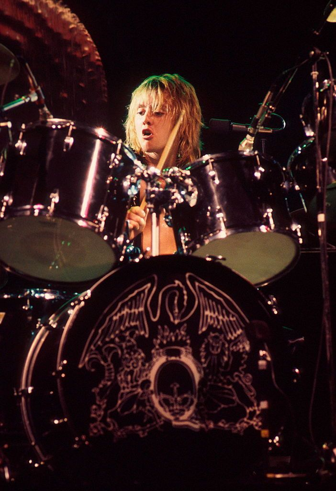

Vocals, piano, guitar, keyboards
Freddie Mercury, geboren als Farrokh Bulsara, werd bekend als de zanger en 'frontman' van de groep Queen en groeide uit tot een van de populairste rockartiesten en popzangers aller tijden. Hij stond bekend om zijn extravagante podiumpersoonlijkheid en zijn explosieve optredens. Hij staat ook te boek als de man met een stembereik van vier octaven, wat buitengewoon is voor een mannelijke zangstem.
Hoewel Mercury's spreekstem binnen het baritonbereik viel, zong hij de meeste liedjes binnen het tenorbereik. Zijn vocale bereik reikte van F2 tot F6: hij kon alles zuiver zingen van bas tot en met sopraan. Zijn stembanden trilden met 7,04 hertz, waar normaal gezien een trilling van 5,4 tot 6,9 Hz gaat. Hij kon belten tot F5. Biograaf David Bret beschrijft zijn stem als een "escalatie binnen een paar maten uit het diep kelig, rock-gegrom naar een tedere, levendige tenor, en dan omhoog naar een hoge, perfecte coloratuur, puur en kristalhelder in het bovenste bereik".
De Spaanse sopraanzangeres Montserrat Caballé, met wie Mercury een album opnam, zei over Freddie: "Het verschil tussen Freddie en bijna alle andere rocksterren was, dat hij zijn stem verkocht". Ze voegde eraan toe: "Zijn techniek was verbluffend. Problemen met tempo's had hij niet, hij zong met een scherp gevoel voor ritme, en zijn vocale plaatsing was zeer goed en hij kon ook nog moeiteloos van het ene in het andere register glijden. Hij was ontzettend muzikaal. Zijn frasering was subtiel, delicaat en lieflijk, of energiek en explosief. Hij kon de juiste kleur en expressieve nuance vinden voor elk woord." In het verloop van Queens carrière veranderde Freddie in live-uitvoeringen de hoogste noten van hun nummers steeds vaker, steeds harmoniserend met secunden, tertsen of kwinten in plaats van de studioversie. Er werd van hem gezegd dat hij "de vreselijkste zangersknobbeltjes" had; hijzelf beweerde nooit zangles te hebben gehad.

Vocals, piano, guitar, keyboards
Brian Harold May is geboren op 19 juli 1947 in Engeland. Zijn moeder was Schots, terwijl zijn vader Engels was. Als tiener bouwde hij samen met zijn vader een zelfgemaakte gitaar, genaamd “The Red Special”. Deze gitaar was gemaakt van geïmproviseerde materialen, waaronder brandhout.
Tijdens zijn jeugd volgde hij een opleiding aan de Hampton Grammar School. Na het afstuderen van deze opleiding in 1965, schreef hij zich in voor een astrofysica-programma aan het London Imperial College. Hier behaalde hij vervolgens zijn bachelor diploma.
Nadat de band Smile (een band waar hij in de hogeschool in zat) was gestopt, richtte Brian May in 1970 de band Queen op samen met Freddie Mercury en Roger Taylor. Een jaar later sloot bassist John Deacon zich aan bij de band. In december 1971 begon de band met het opnemen van hun eerste album. Hierbij maakte de band gebruik van een opnamestudio tijdens nachten en avonden.

Bass guitar, double bass, keyboards
John Richard Deacon (geboren op 19 augustus 1951) is een Engelse gepensioneerde muzikant die vooral bekend is als bassist van de rockband Queen. Hij componeerde verschillende nummers voor de groep, waaronder Top 10-hits "You're My Best Friend", "Another One Bites the Dust" en "I Want to Break Free"; schreef mee aan "Under Pressure", "Friends Will Be Friends" en "One Vision"; en was betrokken bij het financiële beheer van de band.
Deacon groeide op in Oadby, Leicestershire, waar hij bas speelde in een plaatselijke band, The Opposition, voordat hij elektronica ging studeren aan het Chelsea College in Londen. Hij kwam in 1971 bij Queen vanwege zijn muzikale en elektronische vaardigheden, met name de zelfgemaakte Deacy Amp die gitarist Brian May gebruikte om gitaarorkesten te creëren tijdens de hele carrière van Queen. Vanaf het derde album, Sheer Heart Attack, schreef hij minstens één nummer per album, waarvan verschillende hits werden. Naast bas speelde Deacon ook gitaar, keyboards en piano op het studiowerk van Queen.
Na de dood van leadzanger Freddie Mercury in 1991 en het Tribute Concert het jaar daarop trad Deacon slechts sporadisch op met de resterende leden van Queen voordat hij zich in 1997 terugtrok uit de muziekindustrie na het opnemen van "No-One but You (Only the Good Die Young)". Hij heeft niet meegewerkt aan andere projecten die de twee overgebleven leden, Brian May en Roger Taylor, hebben samengesteld. Hij werd als lid van Queen in 2001 opgenomen in de Rock and Roll Hall of Fame en in 2003 in de Songwriters Hall of Fame.
John Deacons eerste gitaar was een rode plastic Tommy Steele special, die zijn ouders voor hem kochten toen hij zeven was.
John's vader, Arthur, leidde hem echter in een andere richting en moedigde John aan om aan elektronica te sleutelen, een hobby waar Arthur zelf ook van hield. Een van John's vroege projecten was het aanpassen van een oud reel-to-reel tapedeck om muziek van de radio op te nemen - meestal The Beatles en Alan Freeman's Hit Parade. John's interesse in elektronica groeide uit tot een passie, en in zijn jonge jaren dacht hij erover om van zijn hobby een carrière te maken.

Drums, percussion, keyboards, vocals
Roger Meddows Taylor (geboren op 26 juli 1949) is een Engelse muzikant, zanger en multi-instrumentalist, vooral bekend als drummer van de rockband Queen. Als drummer werd Taylor al vroeg in zijn carrière erkend om zijn unieke geluid. Hij werd in 2005 in een enquête van Planet Rock uitgeroepen tot achtste grootste drummer in de geschiedenis van de klassieke rockmuziek.[3] Als lid van Queen werd hij in 2001 opgenomen in de Rock and Roll Hall of Fame.
Als songwriter droeg Taylor vanaf het begin nummers bij aan de albums van Queen. Hij componeerde minstens één nummer op elk album en zong vaak de leadzang op zijn eigen composities. Hij schreef of schreef mee aan drie Britse nummers ("These Are the Days of Our Lives",[4] "Innuendo" en "Under Pressure") en schreef nog eens vijf grote hits ("Radio Ga Ga", "A Kind of Magic", "Heaven for Everyone", "Breakthru" en "The Invisible Man").[5] Hij was ook de belangrijkste schrijver van de internationale top-tien hit "One Vision", hoewel het nummer aan de hele band wordt toegeschreven. [6] Hij heeft samengewerkt met artiesten als Eric Clapton, Roger Waters, Roger Daltrey, Robert Plant, Phil Collins, Genesis, Jimmy Nail, Kansas, Elton John, Gary Numan, Shakin' Stevens, Foo Fighters, Al Stewart, Steve Vai, Yoshiki, Cyndi Almouzni en Bon Jovi. Als producer heeft hij albums geproduceerd van Virginia Wolf, Jimmy Nail en Magnum.
Naast zijn drumwerk staat Taylor bekend om zijn falsetstem. Hij speelde soms keyboards, gitaren en bas op zijn eigen nummers. In de jaren tachtig vormde hij, naast zijn werk met Queen, een parallelle band, The Cross, waarin hij de leadzanger en ritmegitarist was. In het begin van de jaren tachtig was Taylor ook panellid in de populaire Britse quizshow Pop Quiz, gepresenteerd door Mike Read. In 2014 verscheen hij in The Life of Rock met Brian Pern als zichzelf.
My Favorite songs: Lie Again, Scarred, World We Created, Fields, For Tonight
